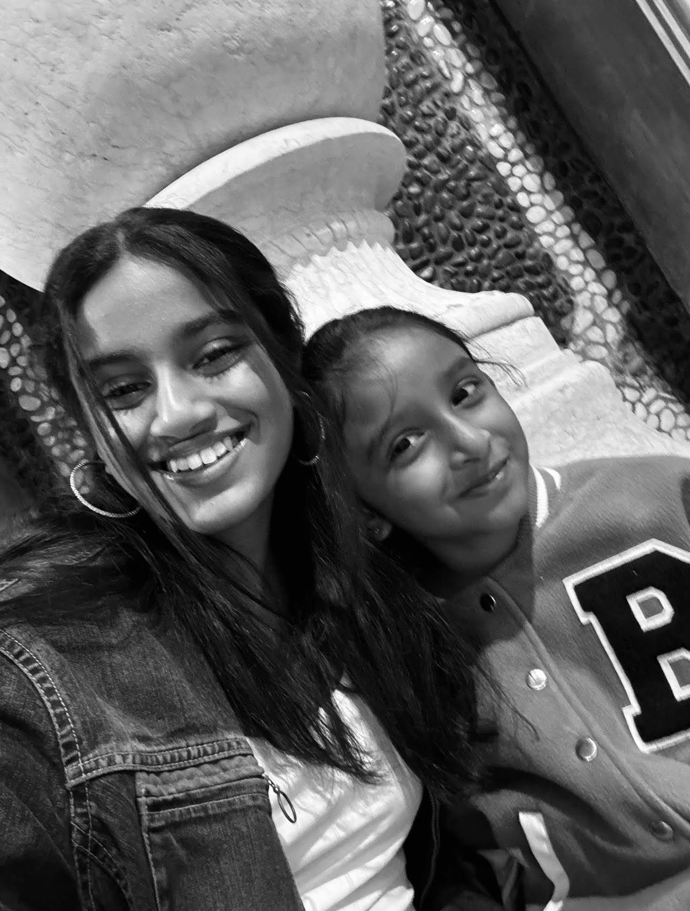

About the Great Tanvi Kollu:
An incomplete history

1. Contacts
Phone Number: 1+ (925)-***-****
Email: kollu7417@mydusd.org/tanvi.kollu@gmail.com
Living: Dublin, California.
Education: Student at Emerald High
2. Skills
Traits:
- Python programing (intermediate)
- HTML (intermediate)
- CSS (intermediate)
- JavaScript (beginner)
3. My complete history of computer science
Lets Get Started :
I have always admired computers and how they work. My parents both have jobs in computer science, and as a child does idolized them and their field of work. Of course has tiime went on that love became genuine, and a passion of my own, not a copy of my parents. This passion specifclly developed into a want to learn about machine based learning (more on that later). In order to grow this spark, I've taken HTML and python classes outside of school, as well as this year taking my first ever official high school computer scince class, with the best teacher ever!!!! I'm so excited to learn about the technical world and grow with it!!!!
4. Goals
Continued:
Ok, here we are going to continue what I started with machine learning earlier. From the second I discovered the feild in 7th grade, I fell in love. I knew that was what I was gonna do. I knew that path was the one meant for me. I knew that it was my calling. Since then I've spent countless hours researching about the field, and have my hopes set on getting in Berkeley and getting a bachelor's in Computer Science inn hopes to fulfill my goals. I really hope with your assistance, one day my aspirations will be met.